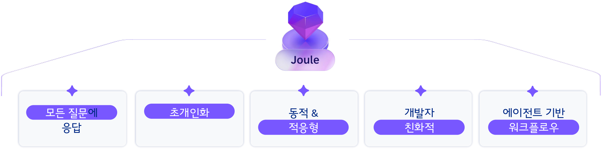

자율성은 높이고, 사람의 통제는 유지
사람이 목표와 권한을 정하고, Agent는 위험 수준과 승인 범위 안에서 실행합니다.

01 · Recommendation
Human Decision
02 · Human Approval
Human Approval
03 · Guardrails
Exception Handling
04 · Orchestration
사람이 목표와 권한을 정하고, Agent는 위험 수준과 승인 범위 안에서 실행합니다.
